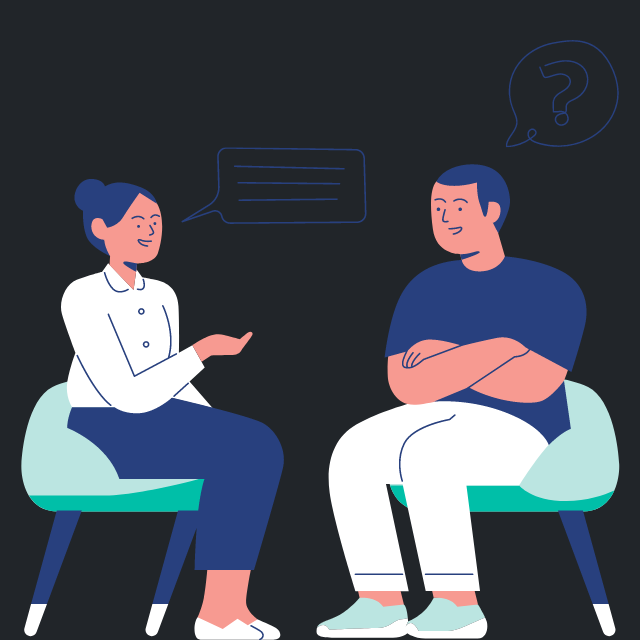

ABOUT ME
Dear visitor...
Before you make any further exploration in this page, let me introduce myself.
My name is Muhammad Alif Zhorif Arachdin, you can call me Alif, or Izhor.
i was born on January 5th 2001, first kid in the family, i live in Jakarta,
Indonesia. Now i'm currently in college taking Informatics Engineering pursuing my Bachelor Degree.
Do i have any hobbies or interest?
Of course i do!!
My hobbies are various, it includes swimming, lifting, code random stuff, and i
have many interest such as
music, history (just a little), gaming, and technology.
Do i have motivation or motto?
i have many of them, but this one is relatable to me:
In order to make differences in your life, you must make different decisions, you must built yourself different ,it can be started by changing 3 simple thing: your mindset, your habits, and your circle.
About my skills...
When it comes to skill, mostly my skills are computer based, i had a little interest
in computer since i'm 6, i know about coding for the first time when i was 16, i learned it
from mobile app called 'SoloLearn', first course i take was HTML, CSS, and SQL.
Challenging and good part?
the challenging part is when i face a problem like error or bugs,
becasue that is when my abilities are truly tested to its limit, the good part is
when i finally mastered thing which is considered difficult for most people, beacuase
it is a great proof for myself of how good i've imporved.
in the next page, it's a skill that i have learned, cultivate and implement
through the years of work, it's not much, but it's an honest work.
if you want to see more of my skills, you can click the button below.
SKILLS
EDUCATION
SMKN 10 Jakarta
Software Engineering
Jakarta, Indonesia
2017 - 2020
Indraprasta University
Informatics Engineering
Jakarta, Indonesia
2020 - Now
TOEIC (750 out of 990)
by International Test Center
2018
TOEIC (790 out of 990)
by International Test Center
2019
Golang mastery by Dr. Thomas Gotz
By SMKN 10 Jakarta
2019
ACHIEVEMENTS
WORK EXPERIENCE
PT 7Sky Global Solution
Internship
no. 149S, Jl. Dr. Saharjo, RT.5/RW.4, Manggarai Sel., Kec. Tebet,
Kota Jakarta Selatan, Daerah Khusus Ibukota Jakarta 12860
Fullstack Web Developer
5 January 2019 - 28 March 2019 (3 Months)
Sorry amigo, this feature is currently on fix
Pardon for the discomfort...
This feature is currently on fix due to some problems
with the Plugins, please pray and support us, in case if you want to ask me something,
please message me via social by clicking one of the social media icons in the top of the page.
ANY QUESTIONS?

DOWNLOAD RESUME

PROJECTS
How do i develop my skills for the last several years?
There are many ways to develop your skills such as taking courses,
or follow YouTube tutorials, but there are one thing are most people missed: Create a Project and keep improving it.
Why?
- Enhance and improve my ability
- Master a new skill and get used to it
- To keep me updated in the tech industry since it's changing pretty fast.
- If i only rely on courses and tutorials, it'll not be enough to improve my skills.